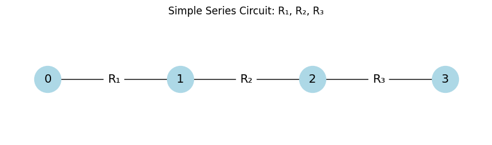
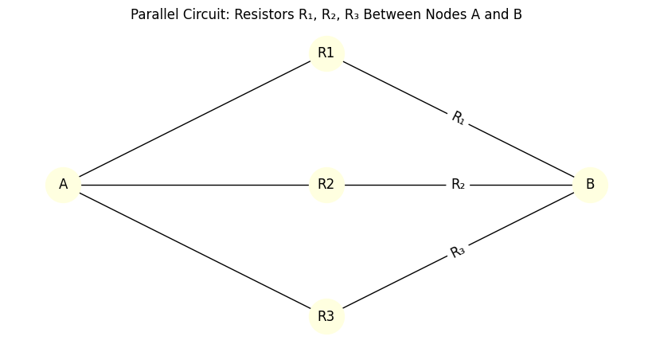
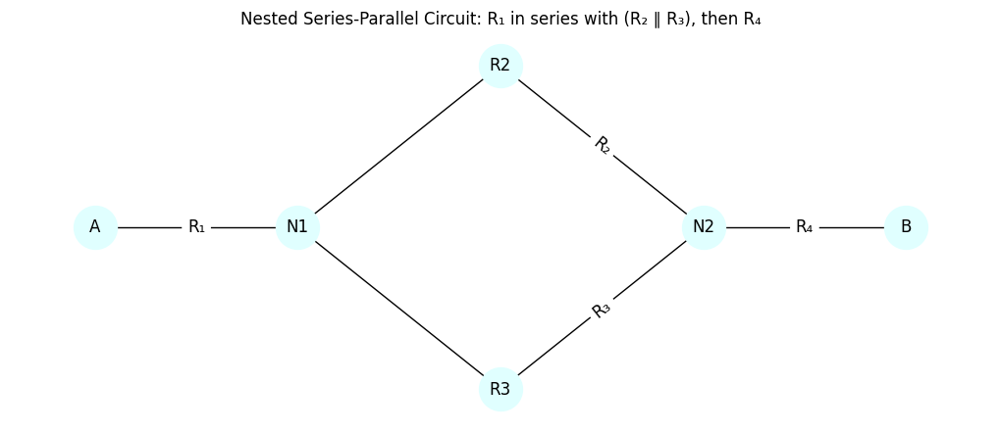
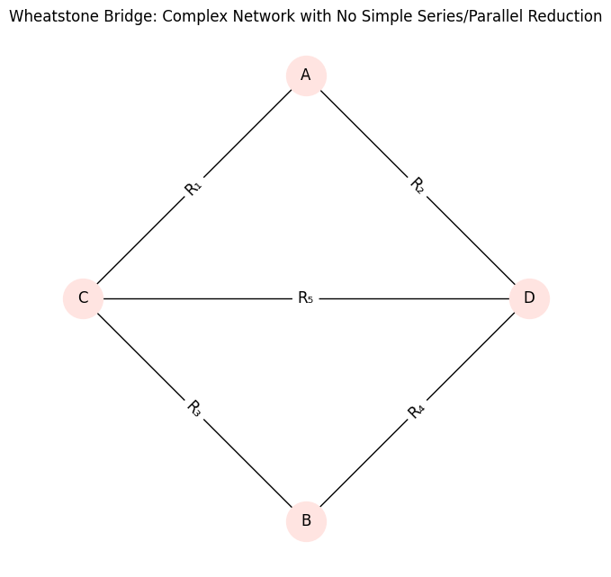

Problem 1
Equivalent Resistance via Graph Theory
1. Problem Overview
Analyzing electrical circuits using graph theory transforms a physical system into a mathematical model. In this approach, nodes represent circuit junctions, and edges represent resistors with associated weights (resistance values).
The central objective is to calculate the equivalent resistance \(R_{\text{eq}}\) between two designated terminals by systematically simplifying the graph.
2. Graph-Theoretic Representation of Circuits
A resistive electrical network can be modeled as an undirected, weighted graph \(G = (V, E)\) where:
- \(V\) is the set of vertices (nodes/junctions).
- \(E\) is the set of edges (resistors).
- Each edge \(e_{ij} \in E\) connects nodes \(i\) and \(j\) with weight \(w_{ij} = R_{ij}\), the resistance.
Types of connections:
- Series: Resistors along a unique path.
- Parallel: Resistors sharing the same pair of nodes.
3. Series and Parallel Simplification
Series Resistance
If resistors \(R_1, R_2, \dots, R_n\) are connected in series, the equivalent resistance is the sum:
Graph-theoretically: a path of degree-2 nodes (excluding endpoints) can be collapsed into a single edge.
Parallel Resistance
If resistors \(R_1, R_2, \dots, R_n\) are connected in parallel between two nodes:
Graph-theoretically: multiple edges between the same node pair can be merged.
4. Nested and Complex Structures
Real-world networks include nested series-parallel combinations and bridge circuits (e.g., Wheatstone bridge) that cannot be reduced by series-parallel rules alone.
Such networks may require:
- Recursive decomposition.
- Cycle detection for recognizing parallel structures.
- Graph contraction to reduce substructures iteratively.
5. Algorithmic Strategy
- Parse input circuit into a graph: edge list or adjacency list with weights.
- Identify reducible patterns:
- Degree-2 chains (series)
- Multiple edges or cycles (parallel)
- Apply simplification rules recursively or iteratively.
- Repeat until the graph reduces to a single edge representing \(R_{\text{eq}}\).
6. Mathematical Tools
- Graph contraction: Merges nodes and aggregates edge weights.
- DFS/BFS: Used to identify paths, cycles, and connected components.
- Cycle detection: Essential for detecting non-trivial parallel paths.
7. Special Cases
Single Resistor
Trivial case:
Empty Graph
No connection implies:
Disconnected Graph
If nodes are isolated, the resistance is undefined or infinite.
8. Theoretical Limitations
Series-parallel reduction fails for non-planar graphs or those with non-reducible cycles, requiring:
- Kirchhoff's laws or
- Laplacian matrix and linear algebraic methods (e.g., solving using node-voltage method).
Plots
Simple Series Circuit

Simple Parallel Circuit

Nested Series-Parallel Circuit

Complex Network (e.g., Wheatstone Bridge)
